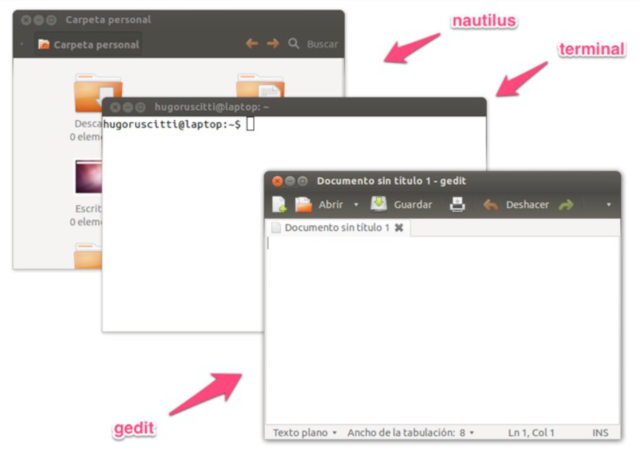
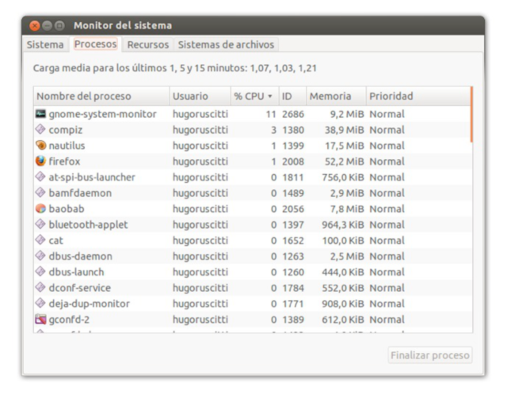
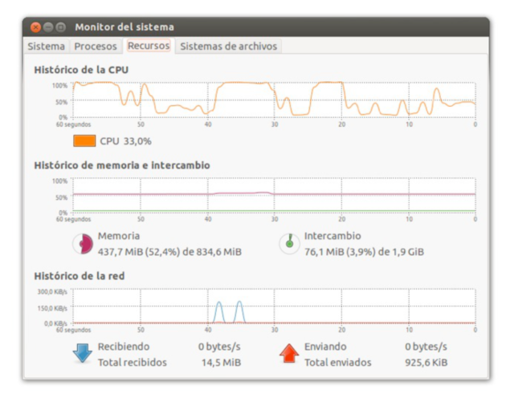
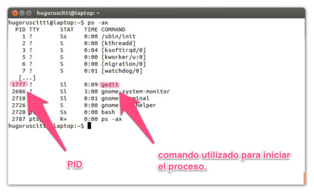

Procesos Linux
index | OSiUX | blog | docs | charlas
¿Qué es proceso?
- Un proceso es la instancia de un programa en ejecución.
- También se lo conoce como tarea.
¿Por qué?
- GNU/Linux es un sistema multitarea, permite la ejecución de múltiples procesos al mismo tiempo.
- Comprender el concepto de procesos nos permite administrar el rendimiento de nuestro equipo.
Lo que el usuario ve:

Lo que el sistema ve:


PID
- Todo proceso que se inicia tiene un número asignado llamado PID.
- Este PID permite identificar el proceso y administrarlo (detenerlo, reanudarlo etc…)
- Ejemplo: Para obtener el PID de un proceso podemos usar el
comando
pidof:pidof init emacs
1 24365
Listar procesos
El comando ps puede listar el estado de los procesos:

Operaciones
Los procesos se pueden controlar de manera externa.
El comando kill, xkill o killall permite enviarle señales a
los procesos. Por ejemplo la señal de terminación:

Jerarquía
El comando pstree nos permite ver la organización de los procesos en ejecución:
ps -fax | grep -A 10 bash | head
24170 pts/0 Ss 0:00 \_ bash 24279 pts/0 S 0:00 \_ su osiris 24292 pts/0 S 0:00 \_ bash 24358 pts/0 S+ 0:00 \_ tmux a 24359 pts/0 Z+ 0:00 \_ [tmux] <defunct> 24360 ? Ss 1:08 tmux a 24363 pts/6 Ss 0:00 \_ sh -c emacs -nw 24365 pts/6 S+ 4:13 | \_ emacs -nw 28623 pts/9 Ss+ 0:00 | \_ /usr/bin/gnuplot 14827 ? Ss 0:00 | \_ sh
pstree -p -U | head
init(1)─┬─NetworkManager(1278)─┬─dhclient(31635)
│ ├─dnsmasq(31646)
│ ├─{NetworkManager}(1282)
│ └─{NetworkManager}(2301)
├─accounts-daemon(1875)───{accounts-daemon}(1880)
├─acpid(1484)
├─apache2(2545)─┬─apache2(2553)
│ ├─apache2(2554)
│ ├─apache2(2555)
│ ├─apache2(2556)
En tiempo real
Para visualizar los procesos en ejecución, también se puede usar
htop o top:
export TERM=linux top -b -n1 | head -20
top - 10:19:35 up 23:46, 4 users, load average: 0.20, 0.10, 0.20
Tasks: 256 total, 1 running, 254 sleeping, 0 stopped, 1 zombie
Cpu(s): 9.3%us, 1.9%sy, 0.0%ni, 88.2%id, 0.6%wa, 0.0%hi, 0.1%si, 0.0%st
Mem: 5897404k total, 5089724k used, 807680k free, 147696k buffers
Swap: 1048572k total, 6420k used, 1042152k free, 3091984k cached
PID USER PR NI VIRT RES SHR S %CPU %MEM TIME+ COMMAND
1529 root 20 0 197m 35m 9.9m S 2 0.6 38:47.52 Xorg
6999 root 20 0 0 0 0 S 2 0.0 0:00.39 kworker/0:0
14835 osiris 20 0 17468 1384 928 R 2 0.0 0:00.01 top
1 root 20 0 24728 2676 1352 S 0 0.0 0:01.75 init
2 root 20 0 0 0 0 S 0 0.0 0:00.04 kthreadd
3 root 20 0 0 0 0 S 0 0.0 0:04.63 ksoftirqd/0
6 root RT 0 0 0 0 S 0 0.0 0:01.23 migration/0
7 root RT 0 0 0 0 S 0 0.0 0:00.40 watchdog/0
21 root 0 -20 0 0 0 S 0 0.0 0:00.00 cpuset
22 root 0 -20 0 0 0 S 0 0.0 0:00.00 khelper
23 root 20 0 0 0 0 S 0 0.0 0:00.00 kdevtmpfs
24 root 0 -20 0 0 0 S 0 0.0 0:00.00 netns
26 root 20 0 0 0 0 S 0 0.0 0:00.25 sync_supers

Resumen
- Los procesos son instancias de programas en funcionamiento.
- Los recursos del sistema son limitados, el sistema administra y hace posible compartir recursos.
- Cada proceso tiene un identificador (
PID), que nos sirve para enviar señales.
Changelog
migro slides pdf de Hugo Ruscitti a .org